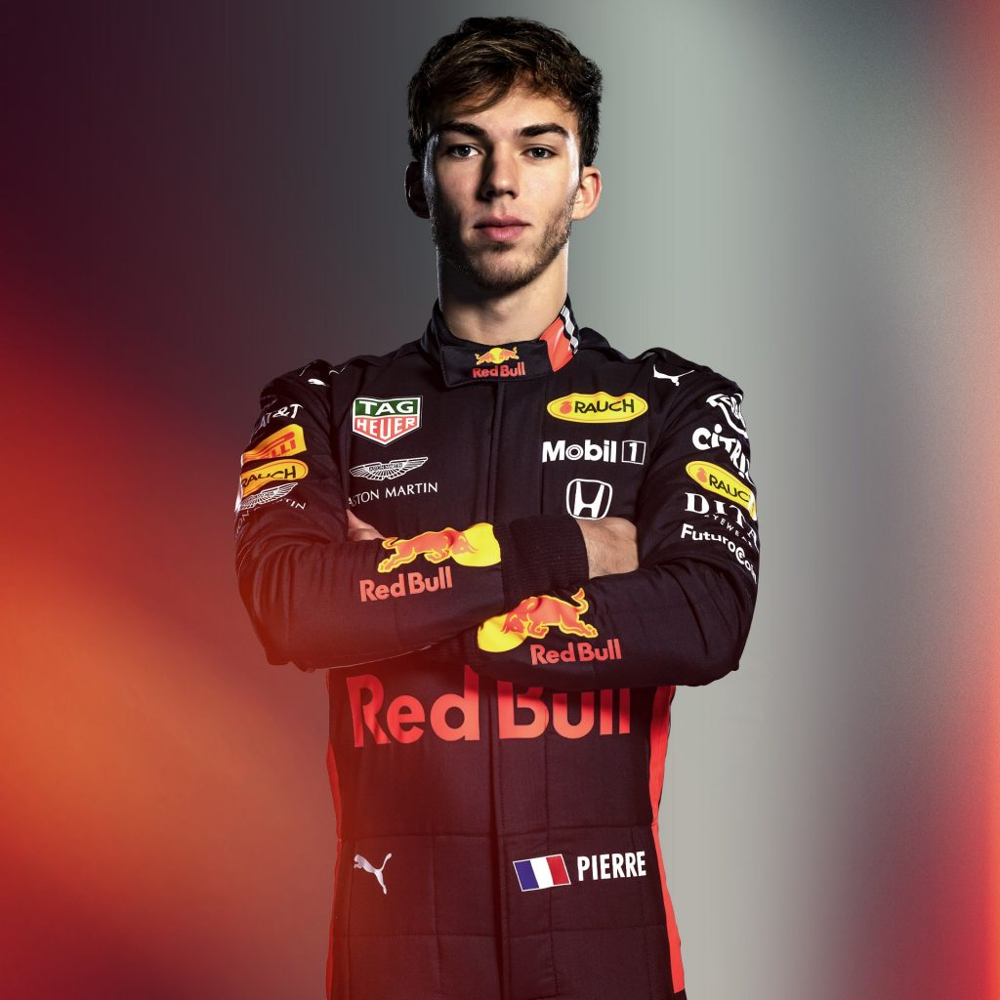

Ред Булл
 Действующие пилоты:
Действующие пилоты:
- Макс Ферстаппен [33]
- Пьер Гасли [10]
 |
Полное название: Aston Martin Red Bull Racing Местоположение: Милтон-Кинс, Великобритания Босс: Кристиан Хорнер Технический директор: Пьер Ваше Шасси: RB15 Блок питания: Honda Первое появление: 1997 Чемпионы мира: 4 Победы: 59 Поулы: 60 Быстрые круги: 60 |
 |
| Макс Ферстаппен 33 | Пьер Гасли 10 |
Red Bull Racing — австрийская автогоночная команда, участвующая в чемпионате «Формулы-1». Обладатель кубка конструкторов в 2010, 2011, 2012, 2013 годах. Была основана руководителем концерна по производству энергетических напитков Red Bull — Дитрихом Матешицом. База команды расположена в Милтон-Кинс, Великобритания, но команда выступает под австрийской лицензией. Руководит командой Кристиан Хорнер — владелец команды Arden International, которая одержала две победы в зачёте пилотов и три в зачёте команд в Международной Формуле-3000, а в данный момент выступает в серии GP2 и её поддерживающей категории GP3.
В декабре 2017 года было объявлено, что в сезоне 2018 титульным спонсором станет компания Aston Martin, а команда будет называться Aston Martin Red Bull Racin